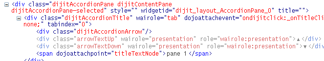

TODO: REMOVE THIS PAGE, IT’S DOCUMENTED DIRECTLY IN Writing widgets.
The Template¶
| Status: | Contributed, Draft |
|---|---|
| Version: | 1.0 |
Often, you’ll find a widget that does almost exactly what you want, but not quite. The last thing you would want to do is hack the source code. Good thing you don’t have to, because the same widget construction techniques apply to both creating and extending widgets. So first, let’s start by extending an existing stable widget: the AccordionContainer and AccordionPane. In the default implementation that Dojo provides for these widgets, the pane titles can only be text, but suppose you want images there as well.
Most Dijit components revolve around a template. A template looks like a macro, and can perform simple substitutions of ${...} variables and substitutions of DOM nodes.
To see how the template language works, let’s look at a standard Accordion Container instance:
<div dojoType="dijit.layout.AccordionContainer">
<div dojoType="dijit.layout.AccordionPane" title="pane 1">
Text of Pane 1
</div>
<div dojoType="dijit.layout.AccordionPane" title="pane 2">
Text of Pane 2
</div>
</div>
The DOM that ends up in memory and on the screen is quite different; however, when you [View Source] your browser shows the HTML above, and Firebug shows the actual DOM used by the AccordionPane:
Dojo replaces the simple nodes of our example with groups of HTML elements. That's one of the jobs of the dijit._Templated. It consults the widget's template to construct this group. Where's the template kept? For AccordionPane, you can find it in the source version of Dojo at dijit/layout/templates/AccordionPane.html:
<div class='dijitAccordionPane'
><div dojoAttachPoint='titleNode,focusNode' dojoAttachEvent='ondijitclick:_onTitleClick,onkeypress:_onKeyPress'
class='dijitAccordionTitle' wairole="tab"
><div class='dijitAccordionArrow'></div
><div class='arrowTextUp' waiRole="presentation">▲</div
><div class='arrowTextDown' waiRole="presentation">▼</div
><span dojoAttachPoint='titleTextNode'>${title}</span></div
><div><div dojoAttachPoint='containerNode' style='overflow: hidden; height: 1px; display: none'
dojoAttachEvent='onkeypress:_onKeyPress'
class='dijitAccordionBody' waiRole="tabpanel"
></div></div>
</div>
That's a lot of HTML to replace the one DIV tag. Mostly this looks like standard HTML with lots of CSS class markers to fill in the styling. That makes the theme system work well. But looking more closely, there are a few attributes and constructs are not standard HTML - these are related to Dojo's template language elements. In particular:
- ${title}
is replaced with the title="..." attribute sent to the widget
- dojoAttachPoint="titleNode,focusNode"
This sets properties in the widget called titleNode and focusNode which point to that DOM node.
- dojoAttachPoint='containerNode':
containerNode is a special attachPoint; all the innerHTML from inside the source HTML ("Text of pane 1") gets copied into here, and widgets instantiated recursively.
- dojoAttachEvent='onkeypress:_onKeyPress':
Connects an event to an event handler at that node.
dojoAttachPoint¶
In the JavaScript of a widget, you often might wish to refer to some of its html template's dom nodes directly. For example in the Accordion widget, the js might want to access the nodes for the title, the title's text, the container or accordion pane, and so on.
You might think the widget author could just use ids in the html template, and then dojo.byId() in the widget's js. But if she does, then if two or more widget instances are created, they'll all have the same ids! Obviously code will blow up then.
Instead, you the widget author do the following:
- In your widget's js, you use (without declaring them) variables for these nodes. For example, the Accordion widget uses variables named: titleNode, titleTextNode, and so on.
- In your widget template's html, for every node that these variables are supposed to correspond to (eg point to), you add the attribute: dojoAttachPoint="yourVariableNameHere".
So if you look at the first code sample above with dojoAttachPoint, the values of those attributes are all js variables (undeclared) that are used in the Accordion widget's js code.
The reason the variables are undeclared is that when the code in _Templated scans the html in step 1, and it finds the variables in the dojoAttachPoint attribute, it adds those variables to your widget class, dynamically.
dojoAttachEvent¶
Let's say you've written a widget, and when the user clicks on it, something happens. What you want is for the programmer using the widget to be able to either change what happens, or have something happen in addition, without having to edit your widget.
To see how to do this, let's see how dijit.form.Button does it for clicking. Note that we need to distinguish between DOM events, which happen on DOM elements; and widget events, which fire when things happen in the widget. (To make this clearer: DOM onclick might fire on elements in your widget, but you would only want the widget's onClick (Note: camelCase!) to fire when your widget is an "enabled" state.)
- In your template html, on the html elements you want to have fire DOM events, add the attribute dojoAttachEvent as follows. Here's some of the dijit Button's Button.html (with ... where I've left stuff out):
<div class="dijit dijitReset dijitLeft dijitInline"
dojoAttachEvent="ondijitclick:_onButtonClick,onmouseenter:_onMouse,onmouseleave:_onMouse,onmousedown:_onMouse"
...
The onclick refers to the DOM event on this div. The _onButtonClick refers to a plain old js method in Button.js. By plain old js method, I mean it's not a DOM event handler. It's plain old js, written by some dijit programmer.
- In your widget's js file, define the plain old js method in dojoAttachEvent, as well as an "extension point" method for your programmer to override.
In Button.js you'll find:
_onButtonClick: function( /*Event*/ e) {
...// Trust me, _onClick calls this._onClick
},
_onClick: function( /*Event*/ e) {
...
return this.onClick(e);
},
onClick: { // nothing here: the extension point!
;
}
Here's what's going on. In step 1, all onClick events are redirected to the Button widget's plain old js method _onButtonClick. This in turn calls plain old _onClick, which does stuff, which then calls plain old js method onClick.
_onButtonClick does stuff that must always happen (and calls _onClick()).
_onClick does stuff that must always happen (and calls onClick()).
onClick does nothing! It's empty!
Why? Because it is here that the programmer using the widget can add their own function, for some custom action that should happen every time the DOM event onclick fires.
Step 3 shows how the widget user can add their custom function, without having to edit the widget. (TODO: move to different page?)
- In some html page that is using (dojo.require-ing) the dijit Button widget, the user writes this:
<div dojoType="dijit.form.Button">
<script type="dojo/method" event="onClick" args="evt">
alert('Woohoo! I'm using the extension point "onClick"!!');
</script>
</div>
Now, whenever someone in the browser clicks on the widget (ok, specifically inside it's top-level div in this case), _onButtonClick and _onClick will execute, but so will the extra alert() statement.
3a. What if you don't want to override the extension point, but want it to execute and then have something custom execute? Just use type="dojo/connect" instead of type="dojo/method".
Closing words:
- Despite the name of the attribute "event", as in event="onClick", it's value is not a DOM event. Remember: onClick is just a plain old js method. (Dojo is misleading here).
- How can you find the plain old js methods to override or "connect" to (in the dojo sense of dojo.connect)? Well, that can be painful. First, you have to look inside the widget. Or inside its ancestors/superclasses. Or theirs. Or theirs. Not fun. Second, they aren't named consistenly. Sometimes _ means private, sometimes it means protected. (TODO: move to separate page?)
A Template for ImageAccordion¶
ImageAccordion only needs a few small changes to the AccordionPane template. All of the rest of the code for AccordionPane can be reused. So here is our new template:
<div class='dijitAccordionPane'
><div dojoAttachPoint='titleNode,focusNode'
dojoAttachEvent='ondijitclick:_onTitleClick,onkeypress:_onKeyPress'
class='dojocAccordionTitle' wairole="tab"
><div class='dijitAccordionArrow'></div
><div class='arrowTextUp' waiRole="presentation">▲</div
><div class='arrowTextDown' waiRole="presentation">▼</div
><span dojoAttachPoint='titleTextNode'><img alt="${title}" src="${src}"
></span></div
><div><div dojoAttachPoint='containerNode'
style='overflow: hidden; height: 1px; display: none'
dojoAttachEvent='onkeypress:_onKeyPress'
class='dojocImageAccordionBody' waiRole="tabpanel"
></div></div>
</div>
What's with the > signs on different lines? That ensures extra whitespace is not included in the actual generated HTML. It makes the template slightly less readable, but pays big dividends in performance.
There are only a few changes from the original AccordionPane:
- The most important change is the replacement of ${text} with <img>. This means the ImageAccordion must be sent an additional attribute - src - with the URL for the image.
- The titleNode now has the CSS class "dojocAccordionTitle"
- The containerNode now has the CSS class "dojocImageAccordionBody"
So now we have the heart of our new widget. Let's pop the template in and make things happen.